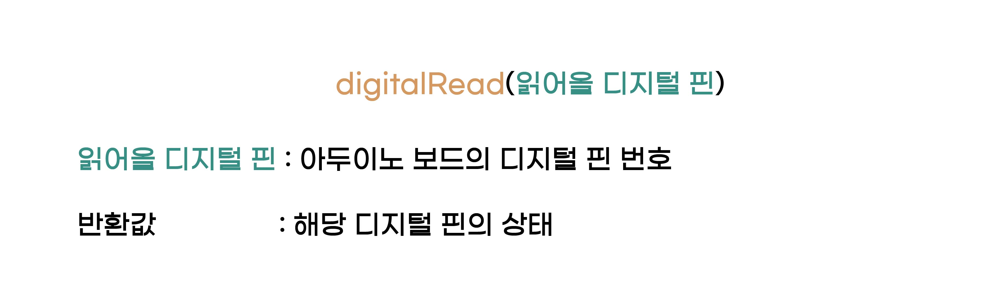

색인
boolean
boolean의 이름은 영국의 수학자 조지 불(George boole)이 창안해서 붙여진 이름으로 논리값을 나타냅니다. 논리값이라는 것은 참, 거짓 을 뜻합니다. 영어로는 true, false입니다.
아두이노에서는 boolean과 bool 을 함께 사용할 수 있습니다. 아두이노에서는 숫자로도 true와 false를 구별하기도 합니다. 0 은 false이며, 다른 나머지 숫자들은 true로 인식합니다.
char
char는 글자, 문자를 뜻하는 character에서 앞부분만 사용된 것으로, 문자를 저장 합니다.
문자를 저장하는데 범위는 왜 숫자냐? 고 물으실 수 있습니다.
간단하게 설명드리면, 프로그래밍에서 문자를 ASCII 코드를 숫자로 표시 되곤합니다. ASCII 코드에는 ‘A’라는 글자가 65라는 값을 가지고 있습니다.
byte
byte는 말 그대로 1바이트를 사용하는 정수 자료형이며 char와 다른 점은 - 값이 범위에 없다는 것입니다.
int
int는 정수라는 뜻을 가진 integer라는 단어에서 만들어 졌습니다. 정수값을 저장하며 범위는 -32,768 ~ 32,767 입니다.
unsigned int
unsigned int 는 int 와 마찬가지로 정수를 다루지만, 범위만 다릅니다 unsigned 의 뜻 그대로 음수를 포함하지 않는 범위를 가집니다. 범위는 0 ~ 65,535 입니다. unsigned int는 65,535에서 1을 더하는 계산을 하면 0 이됩니다.
long
long은 int와 마찬가지로 정수값을 저장하지만, int보다 범위가 훨씬 큰 자료형입니다. 큰 수를 다루는 경우에 사용 되며, 범위는 -2,147,483,648 ~ 2,147,483,647 입니다.
unsigned long
unsigned long 는 long 와 마찬가지로 정수를 다루지만, 범위만 다릅니다 unsigned 의 뜻 그대로 음수를 포함하지 않는 범위를 가집니다. 범위는 0 ~ 4,294,967,295 입니다. unsigned long는 4,294,967,295에서 1을 더하는 계산을 하면 0 이됩니다.
float
float은 소수점을 포함하는 실수 를 다룹니다. 단어의 유래는 실수를 표현하는 방법이 여러가지가 있는데, 부동소수점(floating point) 방식을 사용한다고 하여 붙여졌습니다. ※부동소수점이 뭔지는 모르셔도 됩니다.
범위는 약 1.2x10^-38 ~ 3.4x10^38 입니다.
double
double는 float과 같이 실수를 다루지만, 범위만 다릅니다. 범위는 약 2.3x10^-308 ~ 1.7x10^308 입니다.
string
string은 문자열을 뜻합니다. char 자료형은 문자 하나만을 취급하는 반면, string은 여러개로 이어진 문자열을 취급합니다.
변수 이름 규칙
1. 영어, _(밑줄), 숫자만 가능.
2. 첫 글자는 영어, _(밑줄)만 가능.
3. 공백(띄어쓰기)는 불가능.
4. 대, 소문자를 구별. tE 변수명과 te 변수명은 다른 것.
5. 프로그램 용어로 사용되는 단어는 불가능.
연산자 우선순위
우선순위 |
연산자 |
방향 |
|---|---|---|
1 |
() [] -> . ++ – |
-> |
2 |
sizeof ++ – & ~ ! * + - |
<- |
3 |
* / % |
-> |
4 |
+ - |
-> |
5 |
>> << |
-> |
6 |
> >= < <= |
-> |
7 |
== != |
-> |
8 |
& |
-> |
9 |
^ |
-> |
10 |
| |
-> |
11 |
&& |
-> |
12 |
|| |
-> |
13 |
? |
<- |
14 |
= += *= /= %= &= |= <<= >>= |
<- |
15 |
, |
-> |
함수 정의

오른쪽을 보시면, 더하기라는 함수 이름이 있습니다. 뭔지 모르지만 a와 b를 더하고, 그 계산된 값을 반환하는 것 같습니다. 함수 이름처럼 a와 b를 더한 값을 반환하는 함수입니다.
이처럼 함수가 어떤 동작을 하는지 코드로 작성하는 것을 함수를 정의한다고 표현합니다.
※실제 코드에서는 한글 사용이 불가능 합니다. 한글로 표시한 것은 이해를 돕기 위함입니다.
매개변수
다시 돌아와서, 함수에는 매개변수가 있습니다. 이는 함수이름 옆 괄호에 있는 변수들입니다. 외부에서 전달되는 값들이 대입되어, 함수 내부에서 사용됩니다.
매개변수는 여러 개가 될 수 있으며, 없을 수 도 있습니다. 필수 요소가 아니기 때문에, 매개변수가 없는 함수도 정상적인 함수입니다.
지역변수, 전역변수
지역변수는 함수내에서만 사용가능 하며, 전역변수는 코드 전체에서 사용 할 수 있습니다.
1 float a = 0; //float은 정수와 소수를 포함하는 실수형입니다.
2 float b = 0;
3 int c = 4;
4
5 float area()
6 {
7 float pi = 3.14;
8
9 return c*c*3.14; //c는 전역변수임으로 함수내에서 사용 가능
10 }
11
12 a = area();
13
14 b = pi; //pi는 지역변수로 함수 밖에서는 에러를 발생
a,b는 함수 밖 코드에서 작성되었기 때문에 전역변수입니다.
pi는 함수 안에서 작성되었기 때문에 지역변수입니다.
반면 c는 전역변수임으로 area 함수내에서도 사용되는 것을 볼 수 있습니다.
pinMode

digitalWrite

digitalRead
{kind=link}
delay

analogWrite

analogRead

{kind=link}